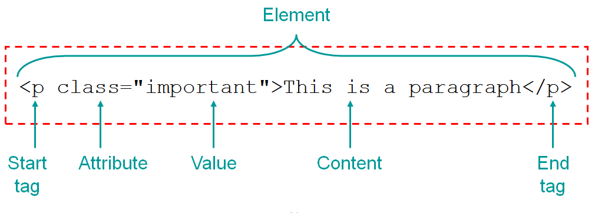

HTML
Html er det, man kalder et ”Markup language” – altså et kodesprog, som har til formål at 'markere' tekst og billeder på en webside.
Html styrer den essentielle struktur af en side, hvor sprog som CSS har funktioner med fokus på udseende.
Dette vist foroven er et klassisk HTML element.
Alle html elementer starter med en åben ”angle bracket” og slutter ligeledes med en lukket "angle bracket". Det er hvad man skriver efter sit "angle bracket", som giver elementets sit startstag og dermed sin funktion.
I dette tilfælde er der tale om en paragraph – som kan ses ved start- og slut-tagget ”p”. Derefter har vi en Attribute, som fortæller os, at vores element er klassificeret under en Værdi(Value) – som i dette tilfælde er ”Important”. Hernæst står selve indholdet af paragraffen altså ”This is a paragraph”.
Det er her vigtigt at pointere, at en ’paragraph’ blot er en tekst på siden - men med den værdi denne har fået; dermed ikke er underlagt reglerne for de andre ’paragraphs’, som ikke er klassificeret ”important”.
En klassisk HTML side er inddelt i en top ”header”, bund ”footer” og så selvfølgelig indholdet i mellem, som er inddelt i "sections". Man kan også vælge at have en "aside" på siden.
Det er op til den enkelte, hvorvidt man vælger at have en traditionel side som ses foroven. Der er forskellige måder at opdele en side på. Min fortrukne måde at opbygge og inddele min side på er med ’Grids’, som du kan læse mere om HER
At et tag er semantisk, kommer an på, hvorvidt det fortæller noget om siden. Tagget beskriver, hvad indholdet består af - så det er nemmere for os at gennemlæse koden og dermed give os et hurtigt overblik.
"p": Er eksempelvis semantisk, da det fortæller, at vi har med en paragraph at gøre.
Andre eksempler kunne være:
Et par ikke semantiske tags kunne være:
De fortæller ikke noget specifikt om siden, og er derfor ikke semantiske.
Det er vigtigt, at de tags man benytter sig af er semantiske – da Google rangerer internettets sider med semantiske tags højere på deres SEO-liste (søgelisten), end de sider uden. Dette er igen fordi at, søgemaskinen (ligesom mennesker) har lettere og hurtigere ved at genkende semantiske tags - og dermed hurtigere finder det resultat du vil have, såfremt resultatet er semantisk.
Kilde: Niels Østergaard